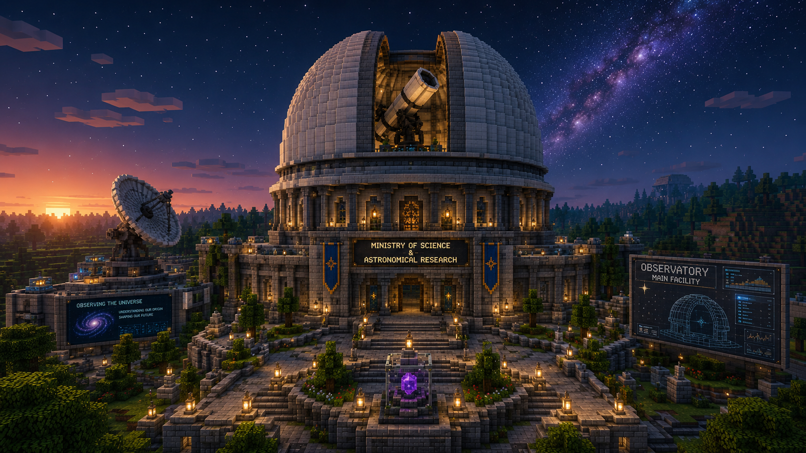
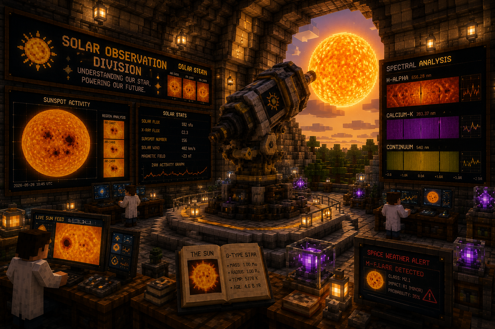
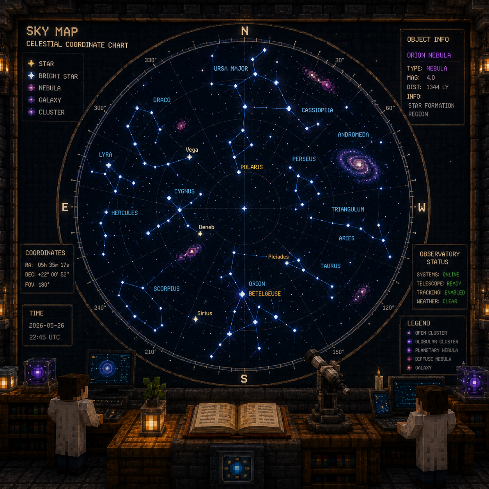

Live instrumentation status, sky imagery, and the temporal-synchronization telemetry that keeps every observation log timestamped against the Unified Binod Calendar.

Main dome — nightly deep-sky survey.

Continuous solar disk and sunspot monitoring.

Current charted sky region.
Illustrative orbital periods, not to scale.
Reference implementation of the Active Temporal Flow (ATF) policy — see the Unified Binod Calendar for the full dashboard.